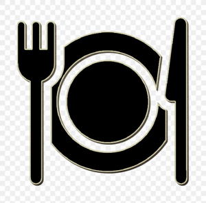
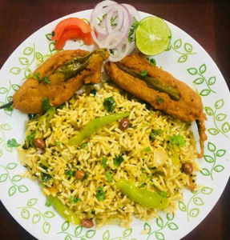
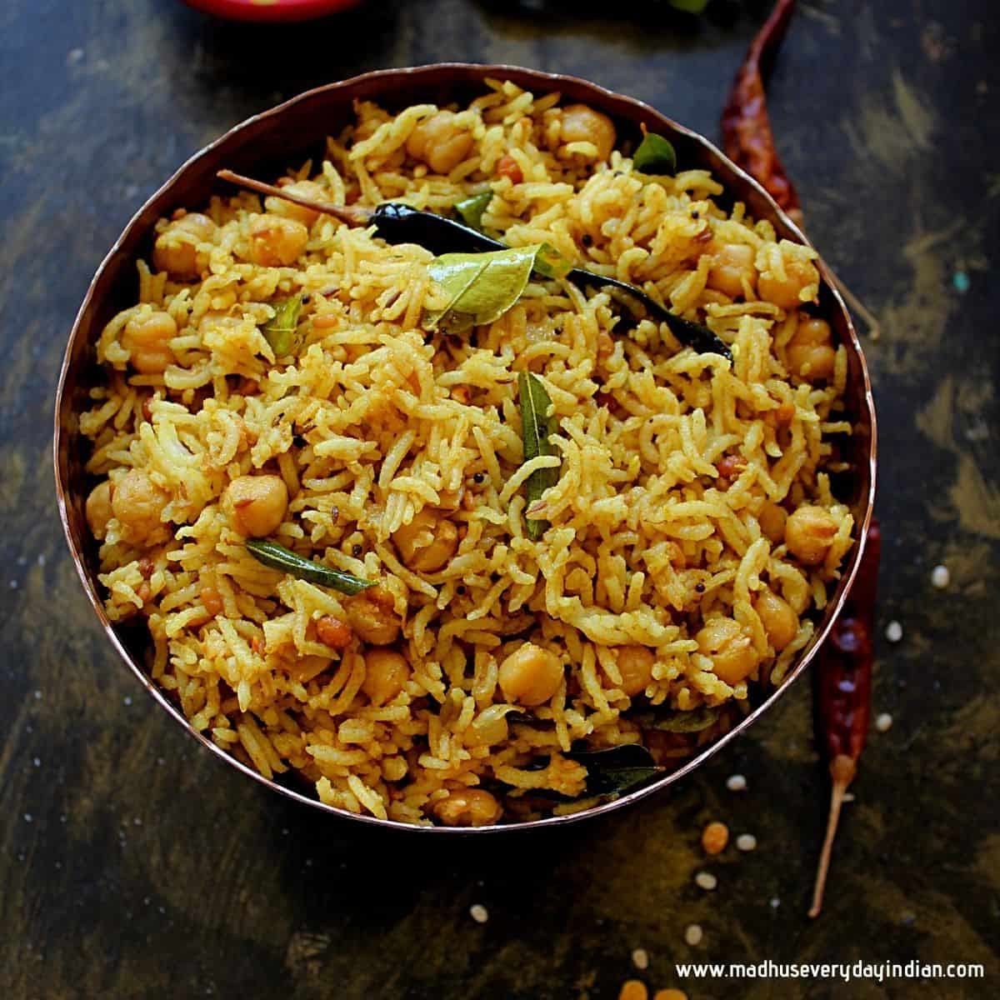
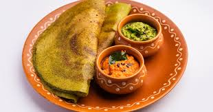
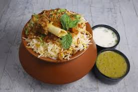
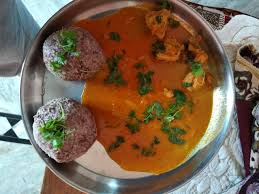

<html>
</html>
<head>
<style>
 body{
             background-color:#FFFACD;
        }
        button:hover{
            background-color:red;
        }
        a{
            font-size: 22px;
            text-decoration: none;
        }
        button{
            font-size: 22px;
            height:25px;
            border: none;
            border-radius: 5px;
            cursor: pointer;
        }
        #uggani{
           display: flex;
            align-items: center;
            padding: 5px;
            border:3px solid brown;
            background-color:#FFEFD5;
            border-radius: 10px;
        }
        #pulihora{
            display: flex;
            align-items: center;
            padding:20px;
           border:3px solid brown;
            background-color:#FFDAB9;
        }
         #dosa{
            display: flex;
            align-items: center;
            padding: 5px;
           border:3px solid brown;
            background-color:#FAF0E6;
            border-radius: 10px;
        }
         #biryani{
           display: flex;
            align-items: center;
            padding: 5px;
           border:3px solid brown;
            background-color:#FAEBD7;
            border-radius: 10px;
        }
         #pulusu{
            display: flex;
            align-items: center;
            padding: 5px;
           border:3px solid brown;
            background-color:#F5DEB3;
            border-radius: 10px;
        }
        li{
            font-size:22px;
        }
       </style>
    <body>
        <header>
        <center>
        <a href="index.html">
        <button>Home</button></a>
        <a href="festival.html">
        <button>Festivals</button></a>
        <button><a>
        
        </button></a>
        <a href="places.html">
        <button>places</button></a>
        </header>
        <hr>
        </center>
</head>
<u>
<h2>uggani baggi</h2>
</u>
<div id="uggani">
    <div>

</div>
<ul>
<li>Uggani baggi, also known as Borugula Upma, is a beloved traditional breakfast dish from the Rayalaseema region of Andhra Pradesh, particularly popular in districts like Anantapur, Kurnool, and Kadapa.</li>
<li>It is made by soaking puffed rice briefly in water, then draining and cooking it with sautéed onions, tomatoes, green chilies, mustard seeds, cumin seeds, curry leaves, and sometimes a tempering of urad dal and ghee to enhance flavor.</li>
<li>The dish is often garnished with fried peanuts, coriander, and a dash of lemon juice, which adds freshness and tang.</li>
<li>Uggani baggi is a simple yet soulful dish that reflects the spicy and hearty culinary traditions of Rayalaseema, celebrated for its unique preparation of soaked puffed rice and its classic pairing with mirchi bajji.</li>
</ul>
</div>
<hr>
<u>
<h2>Pulihora</h2>
</u>
<div id="pulihora">
    <div>
<ul>
    <li>Pulihora, also known as Andhra tamarind rice, is a classic South Indian rice dish that is especially popular in Andhra Pradesh.</li>
    <li>It is renowned for its tangy, spicy, and aromatic flavors, making it a staple during festivals, special occasions, and as a lunchbox favorite.</li>
    <li>Pulihora is usually cooked on special occasions and festive days. It is presented to God as part of prayers known as prasadam in most of the South Indian temples as well as South Indian homes.</li>
    <li>Pulihora gojju (paste) or Pulihora podi (powder) is often pre-made at homes in southern India and stored for months.</li>
</ul>
</div>
<div>

</div>
</div>
<hr>
<u>
<h2>Dosa</h2>
</u>
<div id="dosa">
    <div>

</div>
<ul>
    <li>Masala Dosa: A staple and favorite, often praised for its crispiness and flavorful potato filling. Local eateries like Chittemma Dosa are noted for serving home-style masala dosa, sometimes paired with uggani for a regional twist.</li>
    <li>Onion Cheese Dosa, Paneer Dosa, and Ragi Dosa: These creative options reflect the diversity in Kurnool’s dosa offerings, with outlets like Dosa On Wheels providing a wide menu to suit different tastes.</li>
    <li>Plain Dosa: The classic, thin, and crispy dosa remains a staple at most tiffin centers and restaurants.</li>
</ul>
</div>
<hr>
<u>
<h2>Kunda Biryani</h2>
</u>
<div id="biryani">
    <div>
<ul>
    <li>Kurnool famous biryani, popularly known as Kunda Biryani or Pot Biryani, is a signature dish of the region distinguished by its unique cooking method and rich flavors.</li>
    <li>Kunda Biryani, a specialty of Kurnool, Andhra Pradesh, is a style of biryani cooked in a clay pot, known for its unique flavor and aroma. </li>
    <li>It's a local favorite, with restaurants like Pot Biryani - Kunda Biryani and Hyderabad Bucket And Kunda Biryani serving this dish.</li>
    <li>The term "kunda" refers to the thick, heavy-bottomed clay or metal pot traditionally used to prepare this biryani, which plays a crucial role in its distinctive taste and texture.</li>
</ul>
</div>
<div>

</div>
</div>
<hr>
<u>
<h2>Ragi Sangati with Natu Kodi Pulusu</h2>
</u>
<div id="pulusu">
    <div>

</div>
<ul>
    <li>Ragi Sangati with Natu Kodi Pulusu is a celebrated traditional dish from the Rayalaseema region of Andhra Pradesh, especially popular in Kurnool.</li>
    <li>This combination is prized for its nutritional value, robust flavors, and cultural significance.</li>
    <li>Ragi Sangati is a wholesome, energy-rich food made by cooking rice and ragi (finger millet) flour together until soft, then forming the mixture into balls.</li>
    <li> Ragi is known for its high calcium, fiber, and iron content, making this dish both hearty and healthy.</li>
    </ul>
    </div>
    <a href="#top"> click here:move to up</a>
    </body>
</html>